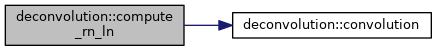
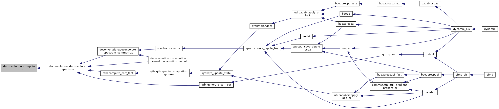
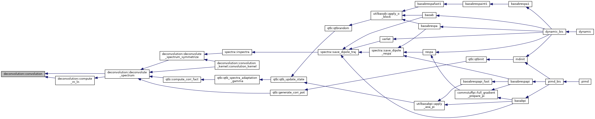
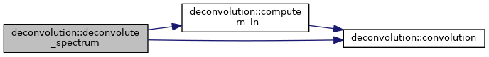
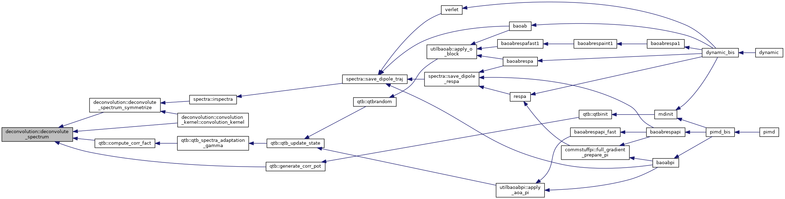
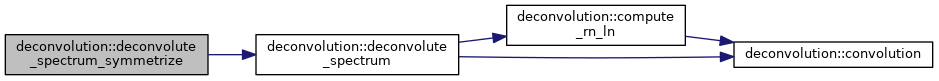
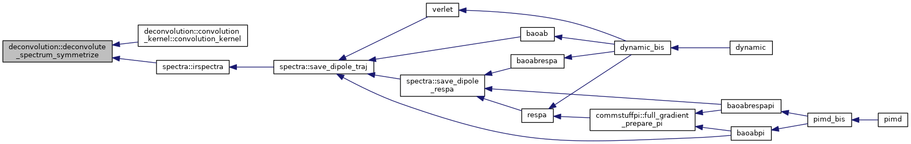
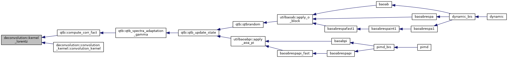
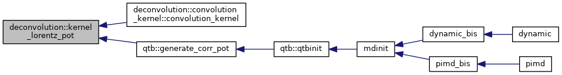

|
Tinker-HP v1.3
|
|
Tinker-HP v1.3
|
Data Types | |
| interface | convolution_kernel |
Public Member Functions | |
| subroutine, public | deconvolute_spectrum_symmetrize (s_in, domega, nIterations, trans, thr, gamma, kT, kernel, s_out, s_rec, verbose) |
| subroutine, public | deconvolute_spectrum (s_in, omega, nIterations, trans, thr, gamma, kT, kernel, s_out, s_rec, verbose) |
| real *8 function, public | kernel_lorentz (omega, omega0, gamma, kT) |
| real *8 function, public | kernel_lorentz_pot (omega, omega0, gamma, kT) |
Private Member Functions | |
| subroutine | convolution (kernel, s_in, domega, s_out, op) |
| subroutine | compute_rn_ln (s0, sn, K, domega, rn, ln) |
Definition at line 1 of file MOD_deconvolution.f90.
|
private |
Definition at line 202 of file MOD_deconvolution.f90.
References convolution().
Referenced by deconvolute_spectrum().


|
private |
Definition at line 190 of file MOD_deconvolution.f90.
Referenced by compute_rn_ln(), and deconvolute_spectrum().

| subroutine, public deconvolution::deconvolute_spectrum | ( | real*8, dimension(:), intent(in) | s_in, |
| real*8, dimension(:), intent(in) | omega, | ||
| integer, intent(in) | nIterations, | ||
| logical, intent(in) | trans, | ||
| real*8, intent(in) | thr, | ||
| real*8, intent(in) | gamma, | ||
| real*8, intent(in) | kT, | ||
| procedure(convolution_kernel) | kernel, | ||
| real*8, dimension(:), intent(inout) | s_out, | ||
| real*8, dimension(:), intent(inout), optional | s_rec, | ||
| logical, intent(in), optional | verbose | ||
| ) |
Definition at line 59 of file MOD_deconvolution.f90.
References compute_rn_ln(), and convolution().
Referenced by qtb::compute_corr_fact(), deconvolution::convolution_kernel::convolution_kernel(), deconvolute_spectrum_symmetrize(), and qtb::generate_corr_pot().


| subroutine, public deconvolution::deconvolute_spectrum_symmetrize | ( | real*8, dimension(:), intent(in) | s_in, |
| real*8, intent(in) | domega, | ||
| integer, intent(in) | nIterations, | ||
| logical, intent(in) | trans, | ||
| real*8, intent(in) | thr, | ||
| real*8, intent(in) | gamma, | ||
| real*8, intent(in) | kT, | ||
| procedure(convolution_kernel) | kernel, | ||
| real*8, dimension(:), intent(inout) | s_out, | ||
| real*8, dimension(:), intent(inout), optional | s_rec, | ||
| logical, intent(in), optional | verbose | ||
| ) |
Definition at line 18 of file MOD_deconvolution.f90.
References deconvolute_spectrum().
Referenced by deconvolution::convolution_kernel::convolution_kernel(), and spectra::irspectra().


| real*8 function, public deconvolution::kernel_lorentz | ( | real*8, intent(in) | omega, |
| real*8, intent(in) | omega0, | ||
| real*8, intent(in) | gamma, | ||
| real*8, intent(in) | kT | ||
| ) |
Definition at line 228 of file MOD_deconvolution.f90.
Referenced by qtb::compute_corr_fact(), and deconvolution::convolution_kernel::convolution_kernel().

| real*8 function, public deconvolution::kernel_lorentz_pot | ( | real*8, intent(in) | omega, |
| real*8, intent(in) | omega0, | ||
| real*8, intent(in) | gamma, | ||
| real*8, intent(in) | kT | ||
| ) |
Definition at line 247 of file MOD_deconvolution.f90.
Referenced by deconvolution::convolution_kernel::convolution_kernel(), and qtb::generate_corr_pot().

 1.8.5
1.8.5